Sending Data from Runtime Manager to External Analytics Software
keywords: analytics, monitoring, splunk, elk, elastisearch, logstash, kibana, logs, mule events, logging, apy analytics, metrics, traceability, arm, anypoint runtime manager


By simply configuring a few settings on the Runtime Manager (both on the cloud-based and on the Private Cloud Edition), the event notifications produced by your running Mule Applications can be easily sent out to your existing monitoring and analytics third party software.
|
Sending data to third party software is a feature that is currently only available for applications deployed to local servers. It is not available for applications that you deploy via the Runtime Manager to CloudHub. See Deployment Strategies for more details. It’s not available either for applications deployed to PCF. |
You can currently send data out to any of the following:
-
Splunk
-
ELK (as an example for anything that consumes system Logs)
The goal of this document to enable you to integrate Runtime Manager with a third party tool such as Splunk or ELK.
| Whether you’re using the cloud based or the on-premise edition of the Anypoint Platform, the features described in this page work identically in both. If you’re interested in requesting the Anypoint Platform on-Premises Edition, please contact your sales representative. |
Basic Architecture
The Runtime Manager exists as:
-
a component of the Anypoint Platform
-
a component of the Anypoint Platform Private Cloud Edition that you can install on-premises
Anypoint Platform Private Cloud Edition has a Runtime Manager that handles only applications that are deployed on-premises. The cloud-based version of Anypoint Platform has a Runtime Manager that allows you manage applications deployed to CloudHub as well as applications that are deployed on-premises and to your own cloud servers. When using whichever version of the Runtime Manager, there’s always a way to monitor your applications. Applications deployed to CloudHub can use Insight: MuleSoft’s Analytics & Monitoring feature. Applications that you deploy on-premises or to your own cloud servers can be integrated into third-party analytics applications, which is what this document describes.
If you deploy apps from Runtime Manager to customer-managed Mule servers, you can send your Mule app event and analytics data to third party analytics software such as Elk and Splunk.
| Sending data to third party software is not currently available for applications on CloudHub. See Deployment Strategies for more details. |
Integration between Runtime Manager and third-party analytics software looks like this:
The Runtime Manager Agent acts in between Runtime Manager and the third party software. The agent enables integration and sends event notifications to your third party analytics tool.
Prerequisites
Please make sure you have one of the following runtimes installed:
-
Mule ESB – Version 3.6 or above
-
API Gateway Standalone – Version 2.1.0 or above (optional in case you want to deal with apps that are built with the API Gateway Runtime)
| Runtime Manager Agent 1.2.0 or above is required, the steps to install and configure it are provided below. |
Installation and Setup of Runtime Manager with a third party analytics tool
In order to have Runtime Manager send data to an external analytics tool, you must follow these steps, which are explained in detail further down.
Update the Runtime Manager Agent
First you must install the latest version of the Runtime Manager Agent, which is in charge of sending messages out of mule. In order to send event information to third party software, you need to have version 1.2.0 or newer of the Runtime Manager Agent. See installing and configuring Runtime Manager Agent.
|
Although the Runtime Manager Agent exists by default bundled with the Mule runtime download as of version 3.7, all Mule Runtime versions older than version 3.7.2 contain an old version of the Runtime Manager Agent that doesn’t support this feature. If this is your case, you must download the latest version of the Runtime Manager Agent separately. Download it here |
Register the Runtime Manager Agent
Place the agent file in your MULE HOME}/bin folder, and then you must register it to the Runtime Manager by running a command in the terminal. Depending on wether you wish to use Runtime Manager through the cloud platform or as part of the Anypoint Platform Private Cloud Edition, you must pass this command a different set of arguments to register it. To obtain the basic command that you must run (complete with your Runtime Manager instance ID) you must do the following:
To obtain this code, you must do the following:
-
Sign in to your Anypoint Platform account
To open Anypoint Platform Private Cloud Edition, make sure you’ve already initiated Runtime Manager. If you haven’t then you must boot it by running docker. Once initiated, you can access it by navigating to https://localhost in a browser. -
Navigate to
Runtime Manager - > Servers -
Click
Add Server. Without needing to actually add a new server, a sample command will be displayed in a popup window that includes the code for your particular organization. Copy this command, depending on where you wish to deploy, you may need to add extra arguments to it.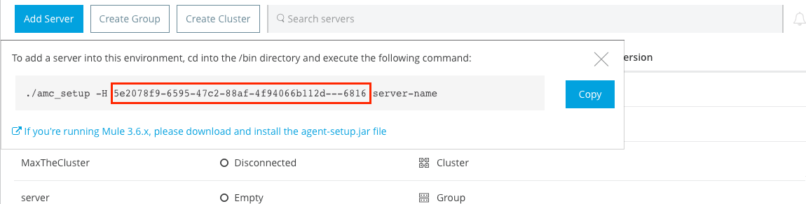
Anypoint Platform Cloud
When using Runtime Manager as part of the cloud-based Anypoint Platform, launch the agent with exactly the same command that you found on the Runtime Manager UI:
amc_setup -H 1c3eded9-7917-4a5e-bbe0-f73f9d4f33c1---2 myServeror on Windows:
amc_setup.bat -H 1c3eded9-7917-4a5e-bbe0-f73f9d4f33c1---2 myServerThe argument -H is an id that references your organization in the Anypoint platform Private Cloud Edition installation.
The final argument of this command is the name that you assign for your Runtime Manager Agent instance, in the above example, myServer. This name will then be visible when interacting with the agent from your Runtime Manager console.
Anypoint Platform Private Cloud Edition
When using Anypoint Platform as an application running on-premises, launch the agent with the following arguments:
amc_setup -A http://localhost:8080/hybrid/api/v1 -W wss://localhost:8443/mule -C https://dev.anypoint.mulesoft.com/accounts -H 361755d7-c619-42ce-9187-19db7a6d94a0---2 myServeror on Windows:
amc_setup.bat -A http://localhost:8080/hybrid/api/v1 -W wss://localhost:8443/mule -C https://dev.anypoint.mulesoft.com/accounts -H 361755d7-c619-42ce-9187-19db7a6d94a0---2 myServerThe argument -H is an id that references your organization in Anypoint Platform installation.
The final argument of this command is the name that you assign for your Runtime Manager Agent instance, in the above example, myServer. This name will then be visible when interacting with the agent from your Runtime Manager console.
Note that three extra arguments must be added to what you copied from the Runtime Manager UI: -A, -W and -C. * A sets the Runtime Manager host address * C sets the Core Services host address * W sets the Mule Communications Manager (MCM) host address
Update the Runtime Manager Agent
If you update the Agent version, it isn’t necessary to undeploy the running apps.
| For more information on how to install or Update the Runtime Manager Agent, see installing and configuring Runtime Manager Agent |
| Creating multiple agents within a single server is not supported. |
Verifying Agent Registration
After running the above command, open Runtime Manager to verify that the agent has been registered successfully:
-
Sign in to Anypoint Platform with your credentials
-
Go to
Runtime Manager - > Servers. You should now see that one of those servers is your Agent instance, named with the name you provided when installing it:
Configure Mule Custom Events
You can configure the Runtime Manager to send out Mule Events to external software, this includes flow executions, exceptions raised, etc. This works with apps deployed to any runtime, and for both the Runtime Manager in the cloud and the Runtime Manager that comes bundled with the Anypoint Platform Private Cloud Edition.
Integrating with Splunk
With Splunk you can capture and index Mule event notification data into a searchable repository from which you can then generate graphs, reports, alerts, dashboards and visualizations.
Configuring your Splunk Account
In order to achieve this you must configure a new source type on your Splunk instance that will have the correct configuration to parse the HTTP Events sent from the Mule API Gateway. To do this, you have to append the following source type to the $SPLUNK_HOME/opt/splunk/etc/system/local/props.conf file.
[mule] TRUNCATE = 0 LINE_BREAKER = ([\r\n]+) SHOULD_LINEMERGE = false INDEXED_EXTRACTIONS = JSON KV_MODE = JSON category = Mule Splunk Integration description = Mule Agent event information
| If this file doesn’t exist yet, you must create it. |
After making these changes, you must restart your Splunk instance for them to take effect.
Configurable fields:
| Field | Data Type | Description | Type | Default Value |
|---|---|---|---|---|
user |
String |
Username to connect to Splunk. |
Required |
|
pass |
String |
The password of the Splunk user. |
Required |
|
host |
String |
IP or hostname of the server where Splunk is running. |
Required |
|
port |
int |
Splunk management port. |
Optional |
8089 |
scheme |
String |
Scheme of connection to the Splunk management port. Possible values: http, https. |
Optional |
https |
sslSecurityProtocol |
String |
SSL Security Protocol to use in the https connection. Possible values: TLSv1_2, TLSv1_1, TLSv1, SSLv3. |
Optional |
TLSv1_2 |
splunkIndexName |
String |
Splunk index name where all the events must be sent. If the user has the rights, and the index doesn’t exist, then the internal handler will create it. |
Optional |
main |
splunkSource |
String |
The source used on the events sent to Splunk. |
Optional |
mule |
splunkSourceType |
String |
The sourcetype used on the events sent to Splunk. |
Optional |
mule |
dateFormatPattern |
String |
Date format used to format the timestamp. |
Optional |
yyyy-MM-dd’T’HH:mm:ssSZ |
Configuration Example
---
mule.agent.gw.http.handler.splunk:
host: 192.168.61.131
user: admin
pass: testConfiguring your Runtime Manager Account*
There are three different ways you can configure the Runtime Manager Agent to direct information to your Splunk account:
Rest API
This feature requires the 1.2.0 agent version or newer.
| This feature requires Runtime Manager Agent version 1.2.0 or newer. |
-
Select the server who’s information you want to send out
-
In the menu on the right, click Manage Server to access the Server’s settings
-
Select the Plugins tab:
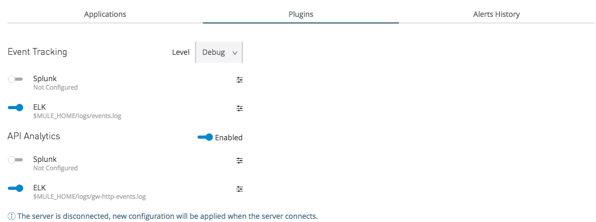 -
Select the kind of information that you want to send out in the Level dropdown menu
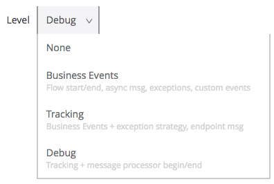 -
On the Event Tracking region, activate the Splunk switch, this will open a pop up menu where you can provide your Splunk user and password data, as well as the host and port for the connection.
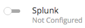 -
Optionally, you can open the advanced menu and set up certain formatting properties of the data that will be sent out
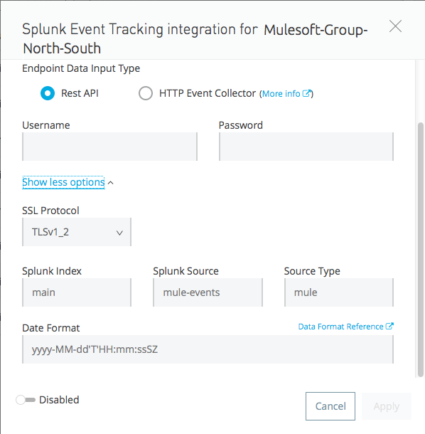
HTTP Event Collector
This feature require 1.3.1 agent version or newer.
| This feature requires Runtime Manager Agent version 1.3.1 or newer. |
-
First you must obtain a token from Splunk. To do so:
-
Sign in to your Splunk account
-
Navigate to Settings → Data Inputs
-
Among the different options, you can find the HTTP Event Collector, click the Add New link next to it
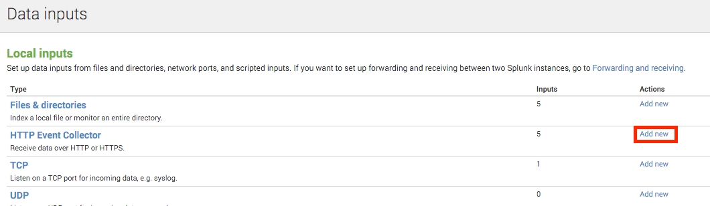 -
Follow the steps of the wizard to set up a data input and obtain the token for it
-
-
Back in the Runtime Manager, select the server who’s information you want to send out
-
In the menu on the right, click Manage Server to access the Server’s settings
-
Select the Plugins tab:
-
Select the kind of information that you want to send out in the Level dropdown menu
-
On the Event Tracking region, activate the Splunk switch. This will open a pop up menu where you can provide your Splunk user and password data, as well as the host and port for the connection.
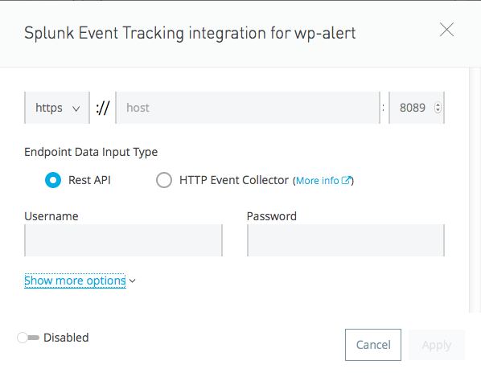 -
Select the HTTP Event Collector option and then paste the token that Splunk gave you
-
Optionally, you can open the advanced menu and set up certain formatting properties of the data that will be sent out
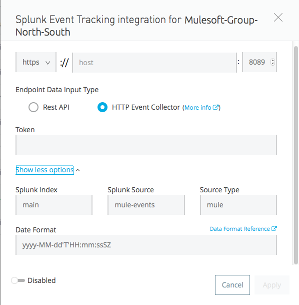
| Although you can set values for the Splunk Index, Splunk Source and Splunk Source type when registering your Data Input in your Splunk account, these will be overwritten by the values you configure for these fields in the Advanced section of the Agent Plugins menu. |
TCP
This feature require 1.3.1 agent version or newer.
-
First you must enable the input source in Splunk. To do so:
-
Sign in to your Splunk account
-
Navigate to Settings → Data Inputs
-
Among the different options, you can find the TCP option, next to it is an Add New link. Click the one you want.
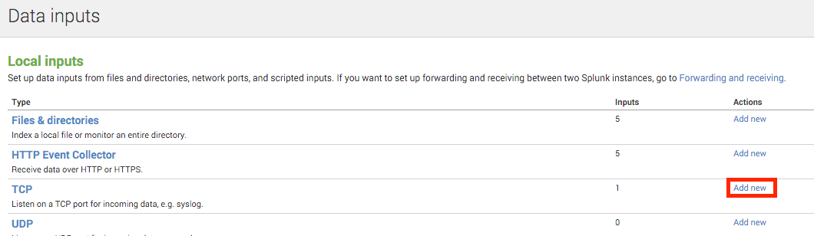 -
Follow the steps of the wizard to set up a data input
-
-
Back in the Runtime Manager, select the server who’s information you want to send out
-
In the menu on the right, click Manage Server to access the Server’s settings
-
Select the Plugins tab:
-
Select the kind of information that you want to send out in the Level dropdown menu
-
On the Event Tracking region, activate the Splunk switch. This will open a pop up menu where you can provide your Splunk user and password data, as well as the host and port for the connection.
-
Activate the Splunk switch, this will open a pop up menu. In the Dropdown pick TCP, then provide the host and port for the connection.
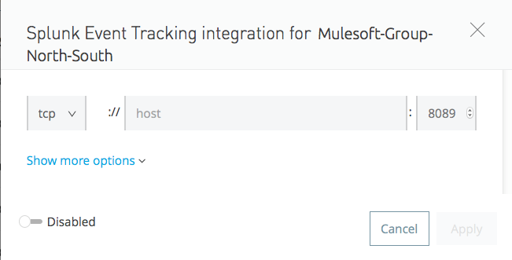
Integrating with an ELK Stack
ELK combines three open source tools (Elasticsearch, Logstash, Kibana) that work together to help you store, search and analyze log data. You can output the Mule event notifications as generic system logs, which can be handled by your ELK stack. Logstash captures and indexes the data into the log, from which you can then use Elastisearch and Kibana to generate graphs, reports, alerts, dashboards and visualizations. The Agent helps you store all of the Event Notifications produced from the Mule runtime flows into a configurable log file with a rolling file policy.
To direct information to the folder where your ELK stack reads from, you must do the following:
-
Select the server who’s information you want to send out
-
In the menu on the right, click Manage Server to access the Server’s settings
-
Select the Plugins tab:
-
Select the kind of information that you want to send out in the Level dropdown menu
-
On the Event Tracking region, activate the ELK switch. This will open a pop up menu where you can provide the address to the folder where you keep the log files that your ELK stack reads.
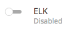 -
Optionally, you can open the advanced menu and set up certain formatting properties of the data you send out and how the information is archived.
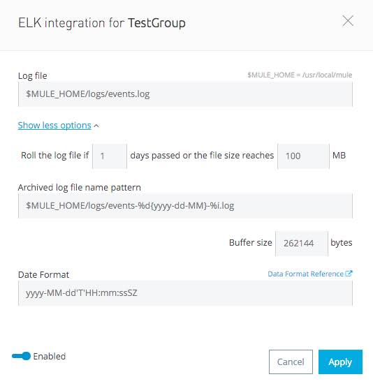
Configure API Analytics
Before you can set up the connection to external software through the Runtime Manager UI, you must first make some changes to the API Gateway to prepare it for this.
-
In your API Gateway Standalone directory, look for the
conf/wrapper.conffile -
In it find the following line and make sure that the property is set to "true"
wrapper.java.additional.<n>=-Danypoint.platform.analytics_enabled=true -
Look for this other line:
wrapper.java.additional.<n>=-Danypoint.platform.analytics_base_uri=https://analytics-ingest.anypoint.mulesoft.com -
Remove the URL in it, so that it looks like this:
wrapper.java.additional.<n>=-Danypoint.platform.analytics_base_uri= -
When using Anypoint Platform Private Cloud Edition, there’s one more parameter you need to change:
wrapper.java.additional.<n>=-Danypoint.platform.on_prem=trueanypoint.platfrom.on_premis set tofalseby default. To manage it through Anypoint Platform Private Cloud Edition, you must set it totrue. To manage it through the Runtime Manager in the cloud, leave it asfalse.
Note that in the above code snippets, when lines that contain .<n>, that should be replaced with an integer number that is unique within the wrapper.
|
Once you have set up your Stand Alone API Gateway, the steps for connecting to Splunk and ELK are identical to those when dealing with Mule Custom Events, except that you should set them up via the corresponding switches.
If you modify your wrapper.conf file as described above but don’t assign an external destination for your data (as you can do via the Runtime Manager UI), then this analytics data will be stored in a queue in the server where the API Gateway is being run and could pile up to the point of crashing the system.
|
Integrating API Analytics with Splunk and ELK
Once you’ve configured your API Gateway, you can now return to Runtime Manager and see that your servers have some additional options in their menu.
You can now set up the sending of API analytics to both Splunk and ELK, you configure exactly in the same way as you do when sending business events to them. See Integrating with an ELK Stack and Integrating with Splunk.
Payload Formats
If you inted to export your payload’s contents to be logged, keep in mind that not all formats can be exported. See About Logging of Payload Formats for a full reference.
Encrypting Passwords
It’s recommended that you assign a master password to your Mule runtime instance or your API Gateway Standalone instance when launching these. If you don’t, then when setting up your credentials for external applications via the Runtime Manager UI, these will be stored as plain text in the conf/mule-agent.yml file. This is not recommendable for security reasons.
Instead, what you should do is launch Mule runtime or API Gateway runtime with an extra argument that is then used to encrypt these passwords when storing them in this .yaml file.
Mule runtime
{MULE_HOME}/bin/mule -M-Dmule.agent.configuration.password=myMasterPassword
or on Windows:
{MULE_HOME}\bin\mule.bat -M-Dmule.agent.configuration.password=myMasterPassword
API Gateway runtime - deprecated
{MULE_HOME}/bin/gateway -M-Dmule.agent.configuration.password=myMasterPassword
or on windows:
{MULE_HOME}\bin\gateway.bat -M-Dmule.agent.configuration.password=myMasterPassword
Note that, in order to have access to these encrypted passwords when you restart Mule runtime or API Gateway runtime, you must assign the same master password you used when generating them. In the case that you decide to change the master password or you omitted it when you launched the runtime, you have to reassign your passwords through the Runtime Manager UI to keep the third party integrations working.
See Also
-
Learn how to first Deploy Applications to your Own Servers
-
Managing Deployed Applications contains more information on how to manage your application once deployed
-
Managing Applications on Your Own Servers contains more information specific to on-premise deployments
-
A REST APIs is also available for deployment to your servers.